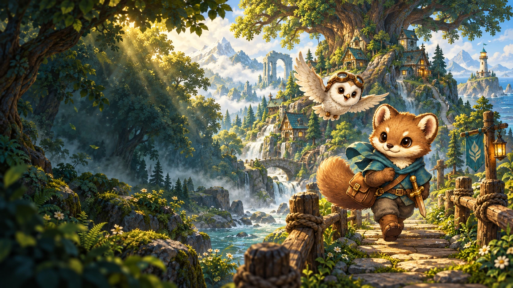
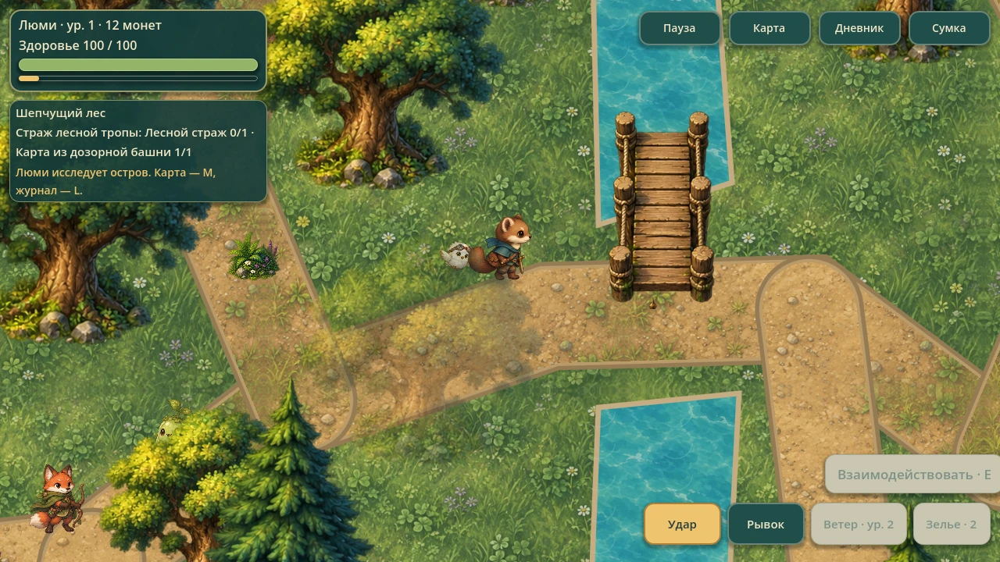
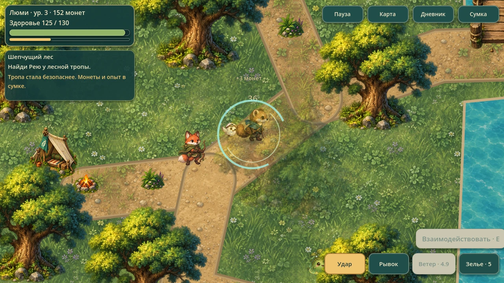
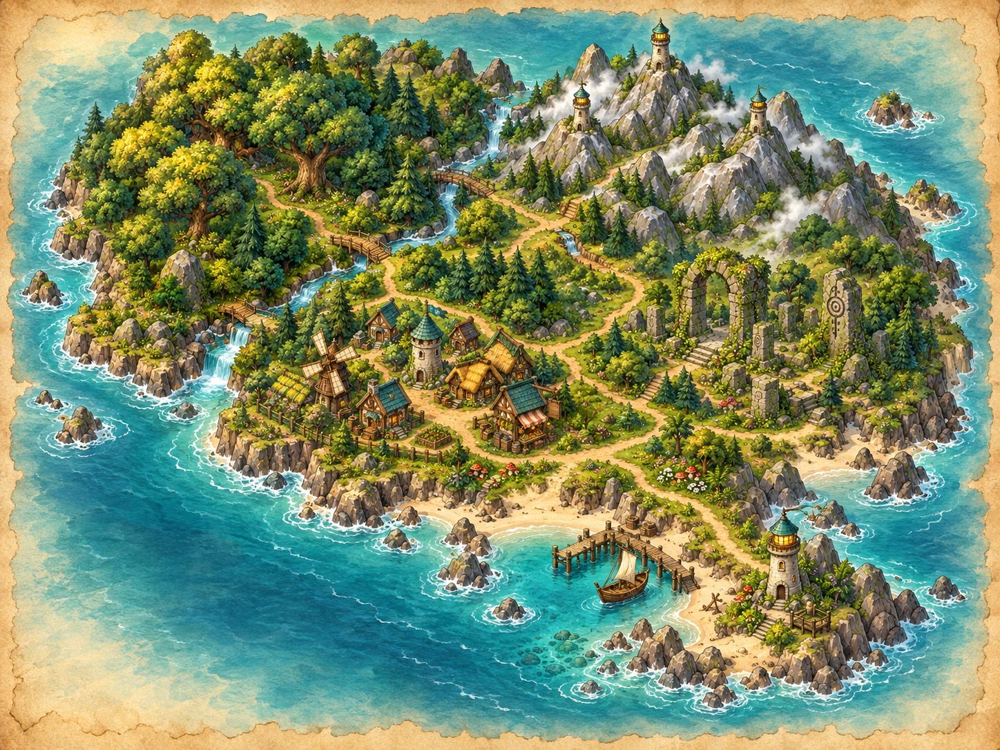
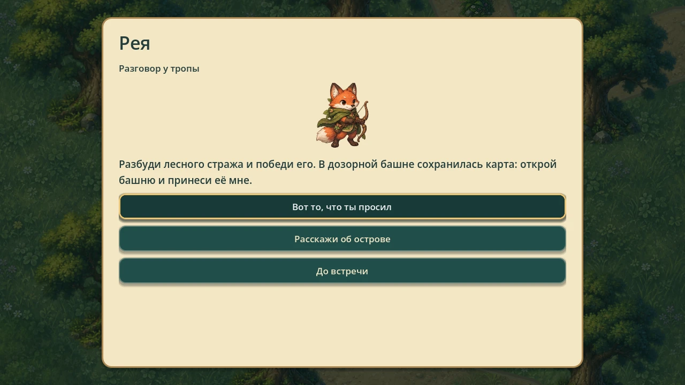
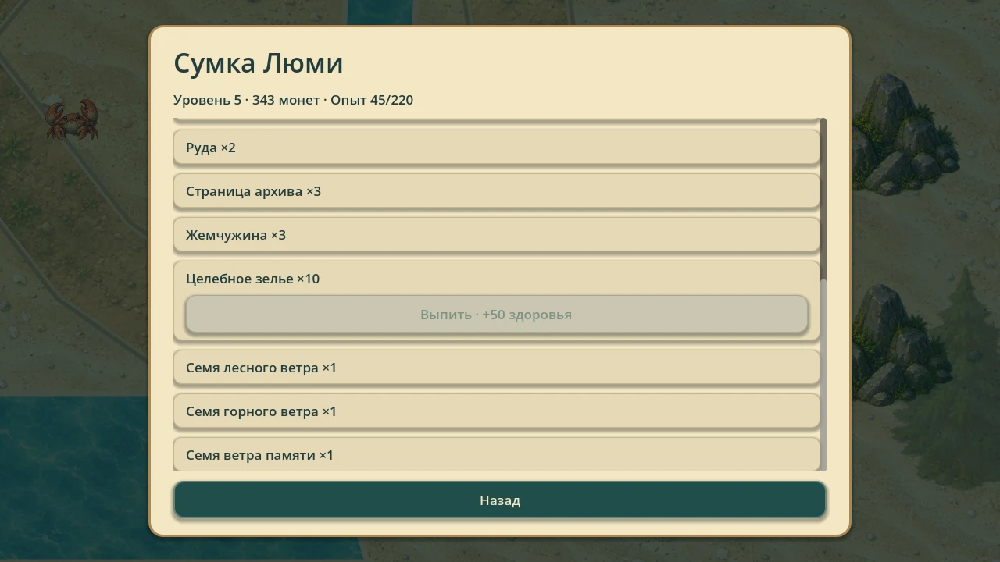
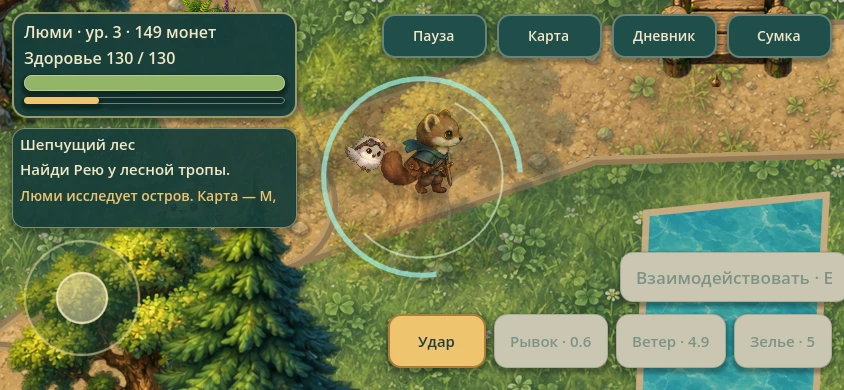

Первая тропа / 01
Шепчущий лес
Шелест травы, деревянные мостики и дорожки под кронами. Здесь Люми знакомится с островом и находит первые следы исчезнувшего ветра.
Загляни за деревья: рядом с основной тропой прячутся находки.
Посмотреть кадры
Уютное приключение с характером
Маленький герой.
Большие открытия.
Ветер исчез, а острову нужна помощь.
Надень плащ, позови друзей —
и отправляйся за первой тайной.
Без регистрации · Прогресс сохраняется на устройстве
Сворачивай с тропы.
Остров хранит секреты.
Лови нужный момент.
Дай отпор лесным врагам.
Выслушай жителей.
Помоги их маленькому миру.
Ищи редкие находки.
Наполни свой рюкзак.
Приключение начинается с любопытства
Люми — куница, которая однажды проснулась на слишком тихом острове. На море сбиваются с пути корабли, а большой маяк погас. Вместе с совой Плюм тебе предстоит вернуть ветер домой.
Гуляй по связанным областям острова, выполняй задания жителей и собирай снаряжение. Здесь путь к следующему открытию начинается с простого «а что там?».

Храбрость — тоже часть путешествия
У врагов свои повадки. Подойди ближе, дождись атаки и используй ветер, чтобы изменить ход боя.

Атака и уклонение помогают держать дистанцию. Зелье вернёт здоровье, когда бой пойдёт не по плану.
Особое умение Люми отталкивает противников. Используй его, когда враги подступают со всех сторон.
Четыре варианта поведения: преследование, рывок, стрельба и охрана территории. Привычная тактика сработает не всегда.
Короткий рывок помогает выйти из зоны атаки. На клавиатуре — Space или Shift, на сенсорном экране — отдельная кнопка.
Сдержи группу врагов порывом ветра. На клавиатуре — K или F, на сенсорном экране — кнопка умения.
Один остров. Пять разных настроений.
Лесные дорожки ведут в деревню, горы, руины и к морю. Всё связано — и в каждой области есть повод задержаться.

Куда отправимся?Первая тропа / 01
Шелест травы, деревянные мостики и дорожки под кронами. Здесь Люми знакомится с островом и находит первые следы исчезнувшего ветра.
Загляни за деревья: рядом с основной тропой прячутся находки.
Посмотреть кадрыУ каждого своя история
Поговори с жителями, возьми задание и возвращайся с хорошими новостями. Выбирай ответы в диалогах — иногда знакомство начинается с самого простого вопроса.
Плюм знает дорогу.
Но самое интересное ты найдёшь сам.
В игре есть задания, ветки ответов и журнал целей. История разворачивается на одном острове.

С каждой находкой — чуть смелее
Опыт повышает уровень Люми, а приобретённое снаряжение помогает в новых боях. Собери запас зелий перед дальней дорогой.

Получай опыт за бои и задания. Новый уровень делает героя сильнее.
Меняй снаряжение в инвентаре и готовься к следующему маршруту.
Соединяй обычную атаку, рывок и порыв ветра. Возможности героя работают вместе.
Для тех, кто заглядывает за каждый камень
Коллекционные предметы разбросаны по пяти областям. Ищи тайники, возвращайся в знакомые места и сохраняй находки в сумке и открытия в дневнике.
Приключение под рукой
Управляй с клавиатуры или используй сенсорные элементы в Web-версии. Слева — движение, справа — действия. Для телефона удобнее горизонтальный экран.
Альтернативы: левая кнопка мыши — атака, Shift — уклонение, F — ветер. Сенсорное управление доступно в браузере. Нативные версии для Android и iOS не опубликованы.

Остановись. Оглянись.
Настоящие снимки из игры.
Выбери кадр, чтобы рассмотреть его ближе.
Первый шаг — самый интересный
Возьми рюкзак. Остальное найдётся по дороге.
Windows + Web · Одиночная игра · Локальное сохранение